TFT LCD 화면을 초기화하고 기본 텍스트·도형을 출력하는 기초를 다집니다. 이제 스마트 시계가 눈을 뜹니다.
전체 시스템에서 이 챕터의 컴포넌트가 어느 레이어에 위치하는지 확인합니다.
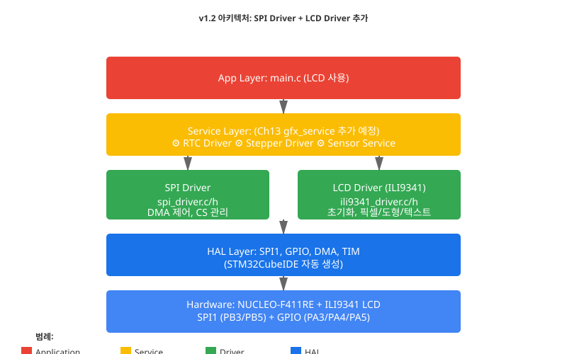
이 챕터에서 구현하는 Driver 레이어의 공개 API입니다.
/* spi_driver.h — SPI 통신 래퍼 */
/**
* @brief SPI 초기화 (CubeMX 설정 후)
*/
void SPI_Init(void);
/**
* @brief SPI DMA 전송 시작
* @param data: 송신 버퍼
* @param len: 전송 바이트 수
*/
HAL_StatusTypeDef SPI_Transmit_DMA(uint8_t *data, uint16_t len);
/**
* @brief DMA 전송 완료 대기
*/
void SPI_Wait_Complete(void);
/* ili9341_driver.h — LCD 디바이스 드라이버 */
/**
* @brief LCD 초기화 (Reset + 명령어 시퀀스)
*/
void ILI9341_Init(void);
/**
* @brief 전체 화면을 특정 색상으로 채우기
* @param color: RGB565 형식의 색상값
*/
void ILI9341_Fill_Color(uint16_t color);
/**
* @brief 개별 픽셀 그리기
* @param x, y: 좌표
* @param color: RGB565 색상
*/
void ILI9341_Draw_Pixel(uint16_t x, uint16_t y, uint16_t color);
/**
* @brief 직선 그리기
*/
void ILI9341_Draw_Line(uint16_t x0, uint16_t y0, uint16_t x1, uint16_t y1, uint16_t color);
/**
* @brief 사각형 그리기
*/
void ILI9341_Draw_Rectangle(uint16_t x, uint16_t y, uint16_t w, uint16_t h, uint16_t color);
/**
* @brief 텍스트 출력
*/
void ILI9341_Draw_String(uint16_t x, uint16_t y, const char *str, uint16_t color, uint16_t bg_color);
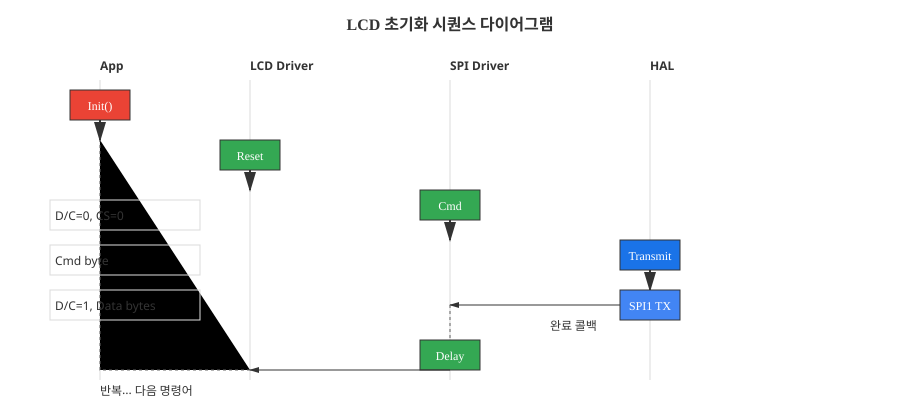
이 챕터를 완료하면 다음을 할 수 있습니다.
지금까지 우리는 숨겨진 기능들을 만들었습니다. Ch10에서는 시침을 움직였지만, 사용자는 단지 모터 소리만 들었습니다. Ch11에서는 온습도를 읽었지만, 센서의 데이터는 시리얼 포트로만 흘러갔습니다. 하지만 "스마트 시계"는 정보를 보여줘야 합니다.
이 챕터에서는 TFT LCD 화면을 초기화하여 모든 정보를 시각화합니다. 디지털 시각, 온습도, 스톱워치가 화면에 떠오르는 순간, 우리 프로젝트는 비로소 "시계" 형태를 갖추게 됩니다.
Ch11에서 SHT31 센서를 I2C로 연결했습니다. 왜 이번에는 LCD를 SPI로 연결할까요?
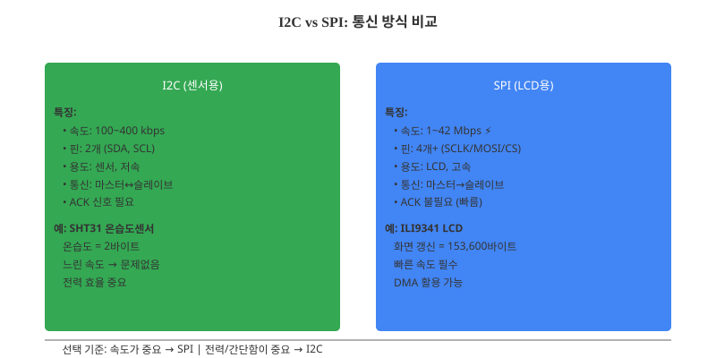
| 항목 | I2C | SPI |
|---|---|---|
| 속도 | 100 kbps 일반적, 최대 400 kbps | 1~42 Mbps (STM32F411) |
| 핀 수 | 2개 (SDA, SCL) | 4개+ (SCLK, MOSI, MISO, CS) |
| 용도 | 센서, 저속 디바이스 | LCD, EEPROM, 고속 전송 |
| 통신 특성 | 편도 1차선 도로, 교통 신호 대기 필요 (ACK/NACK) | 양방향 4차선 고속도로, 신호등 없음 (Chip Select로 지정) |
SPI(Serial Peripheral Interface)는 마스터(MCU)와 슬레이브(LCD) 사이의 고속 동기 통신 방식입니다. 이름 그대로 "주변장치와의 일렬 통신"이며, 클럭 신호를 중심으로 데이터를 주고받습니다.
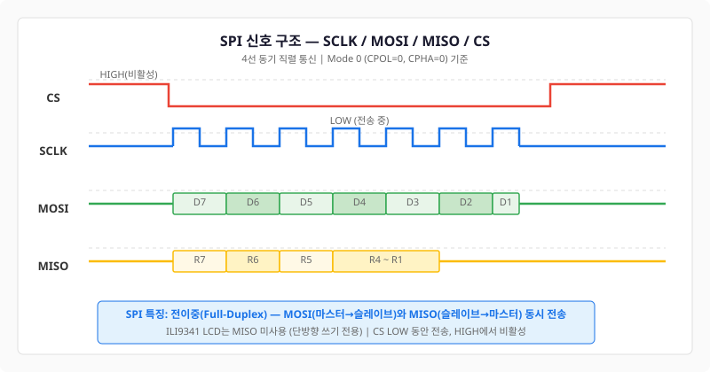
SPI 통신에 필요한 4가지 신호는 다음과 같습니다:
SPI는 CPOL(클럭 극성)과 CPHA(클럭 위상) 두 가지로 4가지 모드가 있습니다. ILI9341은 Mode 0 (CPOL=0, CPHA=0)을 사용합니다.
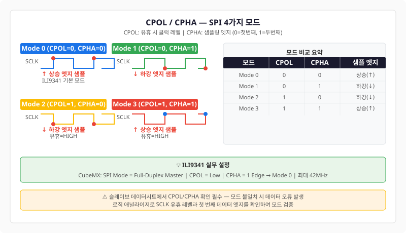
STM32F411에는 3개의 SPI 인터페이스가 있습니다. 우리는 NUCLEO-F411RE 기판의 SPI1을 사용합니다:
CubeMX에서 SPI1을 설정한 후, 코드는 매우 간단합니다:
/* spi_driver.c — SPI1 초기화 래퍼 */
#include "main.h"
#include "log_system.h"
extern SPI_HandleTypeDef hspi1;
void SPI_Init(void)
{
LOG_I("SPI1 초기화 시작");
/* CubeMX에서 생성된 MX_SPI1_Init() 호출됨 (main.c에서) */
/* 여기서는 추가 초기화만 필요하면 작성 */
LOG_I("SPI1 초기화 완료");
}
HAL_StatusTypeDef SPI_Transmit_DMA(uint8_t *data, uint16_t len)
{
LOG_D("SPI DMA 전송 시작: %d bytes", len);
HAL_StatusTypeDef status = HAL_SPI_Transmit_DMA(&hspi1, data, len);
if (status != HAL_OK) {
LOG_E("SPI DMA 전송 실패!");
return status;
}
return HAL_OK;
}
void SPI_Wait_Complete(void)
{
/* DMA 콜백에서 플래그를 설정 */
while (hspi1.State != HAL_SPI_STATE_READY) {
__NOP();
}
}
ILI9341은 320×240 해상도의 TFT LCD 컨트롤러 칩입니다. SPI를 통해 초기화 명령어와 픽셀 데이터를 받으며, 자체 메모리에 프레임버퍼를 유지하면서 화면에 표시합니다.
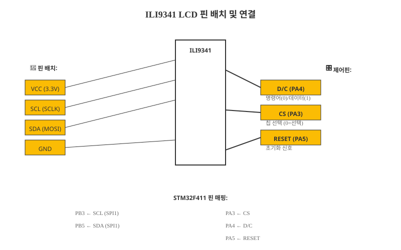
ILI9341 모듈은 다음 핀을 가집니다:
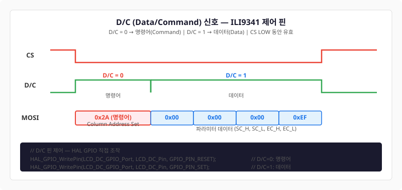
D/C 핀의 역할이 가장 중요합니다. 같은 SPI 신호로 명령어와 데이터를 모두 전송하므로, D/C 핀으로 이를 구분해야 합니다:
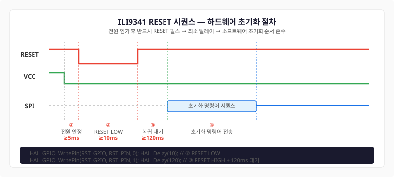
LCD 초기화의 첫 단계는 Reset 신호입니다. 전원이 켜진 후 Reset을 LOW로 만들었다가 HIGH로 올려서, LCD의 내부 상태를 초기화합니다.
/* Reset 신호 처리 (pseudo-code) */
// Reset GPIO 설정 (CubeMX에서)
GPIO_InitTypeDef GPIO_InitStruct = {0};
GPIO_InitStruct.Pin = GPIO_PIN_5; // RESET 핀
GPIO_InitStruct.Mode = GPIO_MODE_OUTPUT_PP;
GPIO_InitStruct.Pull = GPIO_NOPULL;
GPIO_InitStruct.Speed = GPIO_SPEED_FREQ_HIGH;
HAL_GPIO_Init(GPIOA, &GPIO_InitStruct);
// Reset 신호 전송
HAL_GPIO_WritePin(GPIOA, GPIO_PIN_5, GPIO_PIN_RESET); // LOW
HAL_Delay(10); // 최소 10ms 대기
HAL_GPIO_WritePin(GPIOA, GPIO_PIN_5, GPIO_PIN_SET); // HIGH
HAL_Delay(120); // 최소 120ms 대기 (LCD 내부 안정화)
| 신호 | STM32 핀 | 핀 모드 |
|---|---|---|
| SCLK (SCL) | PB3 | AF (SPI1_SCK) |
| MOSI (SDA) | PB5 | AF (SPI1_MOSI) |
| D/C | PA4 | Output GPIO |
| CS | PA3 | Output GPIO |
| RESET | PA5 | Output GPIO |
LCD는 매 프레임마다 수십만 바이트를 송수신해야 합니다. CPU가 바이트 하나하나를 전송하면 너무 느립니다. 따라서 DMA(Direct Memory Access)를 사용하여 CPU 개입 없이 메모리에서 직접 LCD로 데이터를 보냅니다.
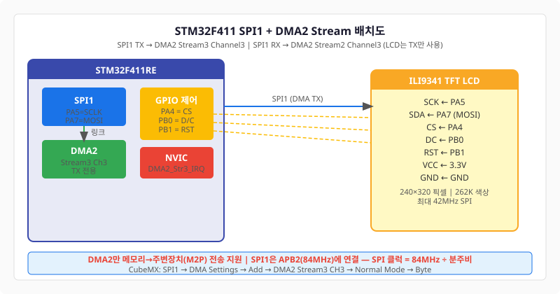
STM32F411의 DMA2는 여러 스트림을 제공합니다. 우리는 DMA2 Stream 2를 SPI1 TX에 할당합니다.
다음과 같이 CubeMX에서 SPI1 DMA를 설정합니다:
DMA 전송이 완료되면 콜백 함수가 호출됩니다. 여기서 CS 핀을 HIGH로 올려서 통신을 종료합니다.
/* stm32f4xx_it.c — DMA 인터럽트 핸들러 */
void DMA2_Stream2_IRQHandler(void)
{
HAL_DMA_IRQHandler(&hdma_spi1_tx);
}
/* 콜백 함수 (user 섹션에 등록) */
void HAL_SPI_TxCpltCallback(SPI_HandleTypeDef *hspi)
{
if (hspi->Instance == SPI1) {
LOG_D("SPI DMA 전송 완료");
/* CS 핀을 HIGH로 올려서 LCD 선택 해제 */
HAL_GPIO_WritePin(GPIOA, GPIO_PIN_3, GPIO_PIN_SET);
}
}
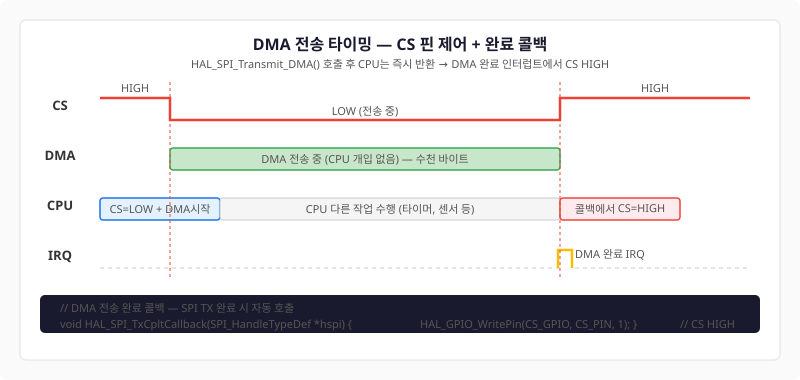
LCD와 통신할 때마다 다음 패턴을 반복합니다:
/* spi_driver.c — SPI DMA 전송 함수 */
HAL_StatusTypeDef SPI_Transmit_DMA(uint8_t *data, uint16_t len)
{
/* CS 핀 LOW (LCD 선택) */
HAL_GPIO_WritePin(GPIOA, GPIO_PIN_3, GPIO_PIN_RESET);
/* DMA 전송 시작 */
HAL_StatusTypeDef status = HAL_SPI_Transmit_DMA(&hspi1, data, len);
if (status != HAL_OK) {
LOG_E("SPI DMA 전송 실패!");
HAL_GPIO_WritePin(GPIOA, GPIO_PIN_3, GPIO_PIN_SET); // CS HIGH
return status;
}
/* 콜백에서 CS를 HIGH로 올림 */
return HAL_OK;
}
void SPI_Wait_Complete(void)
{
/* DMA 전송 완료 대기 */
while (hspi1.State != HAL_SPI_STATE_READY) {
__NOP();
}
}
이것이 이 장의 핵심입니다. ILI9341을 완전히 초기화하려면 공식 데이터시트에서는 25~35개의 명령어를 권장하고 있습니다. 그러나 우리의 실무 구현에서는 15개의 핵심 명령어만으로도 충분합니다. 각 명령어는 LCD의 전압, 색상, 주사율 등을 설정합니다.
모든 명령어는 다음 패턴을 따릅니다:
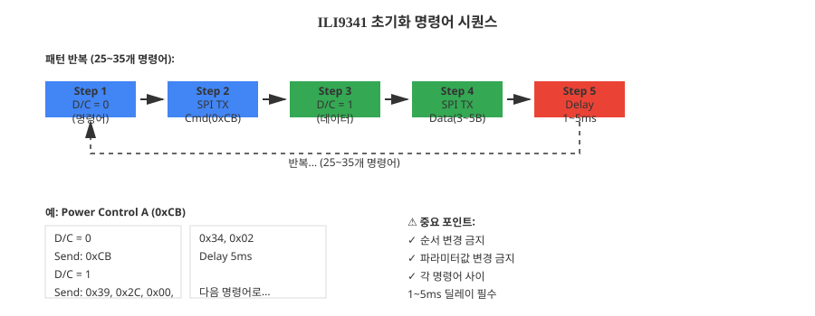
각 명령어마다:
ILI9341 공식 데이터시트의 표준 초기화 시퀀스는 약 25~35개의 명령어를 포함합니다. 그 중 가장 중요한 15개 명령어는:
| 명령어 (단계) | 16진수 | 파라미터 | 설명 |
|---|---|---|---|
| 1. Power Control A | 0xCB | 5바이트 | AVDD(양수 전압), GVDD(GND 참조) 설정. LCD 백라이트 밝기에 영향. |
| 2. Power Control B | 0xCF | 3바이트 | VRH(절대 레퍼런스 전압), VREG1(레귤레이터 전압) 설정. 화면 안정성을 위해 필수. |
| 3. Power Control 1 | 0xC0 | 3바이트 | VREG1OP(Op-Amp 내부 전압) 설정. 화질 보정에 관련. |
| 4. Power Control 2 | 0xC1 | 1바이트 | SAP(Source Output Amplifier Power) 설정. 출력 드라이버 강도 조정. |
| 5. VCOMH Regulator | 0xC5 | 2바이트 | VCM(Common Mode Voltage) 설정. 흑백 명암 대비 조정. 이 값이 잘못되면 화면이 밝거나 어둡게 나타남. |
| 6. VCOMH Voltage | 0xC7 | 1바이트 | VCOMH 전압값. 우리는 0x86(기본값) 사용. 커스텀 값으로 감마 커브 조정 가능. |
| 7. Memory Access | 0x36 | 1바이트 | 화면 방향(세로/가로), RGB/BGR 순서 설정. 0x48 = BGR mode, 세로 방향. |
| 8. Pixel Format | 0x3A | 1바이트 | 색상 깊이 설정. 0x55 = 16비트(RGB565). 우리는 이것만 사용. |
| 9. Frame Rate | 0xB1 | 2바이트 | DIVA(분주), RTNA(주기) 설정. 화면 갱신 빈도 조정. 보통 60Hz 기본값. |
| 10. Display Function | 0xB6 | 4바이트 | 주사선 수, gate 타이밍 설정. 320×240 LCD용 최적값 포함. |
| 11. Gamma Set | 0x26 | 1바이트 | 감마 곡선 선택. 0x01 = Gamma 1 (기본). 화면 밝기의 인지적 선형성 조정. |
| 12. Gamma + Correction | 0xE0 | 15바이트 | 양수 감마 교정 곡선(밝은 부분). 각 톤 단계의 밝기 미세 조정. |
| 13. Gamma - Correction | 0xE1 | 15바이트 | 음수 감마 교정 곡선(어두운 부분). 양수 곡선의 보수 관계. |
| 14. Sleep Out | 0x11 | 없음 | LCD를 슬립 모드에서 깨움. 뒤에 반드시 120ms 딜레이 필요. |
| 15. Display On | 0x29 | 없음 | LCD를 완전히 활성화하여 화면에 데이터 표시 시작. 초기화 마지막 단계. |
데이터시트의 초기화 시퀀스를 그대로 구현한 코드입니다. 이 코드는 변경하지 마세요.
/* ch12_ex02_ili9341_init.c — ILI9341 초기화 */
#include "main.h"
#include "log_system.h"
extern SPI_HandleTypeDef hspi1;
/* 딜레이 함수 (마이크로초 정밀도) */
static void delay_ms(uint32_t ms)
{
for (uint32_t i = 0; i < ms * 10000; i++) {
__NOP();
}
}
/* LCD 명령어 전송 (D/C = 0) */
static void lcd_send_cmd(uint8_t cmd)
{
HAL_GPIO_WritePin(GPIOA, GPIO_PIN_4, GPIO_PIN_RESET); // D/C = 0 (명령어)
HAL_GPIO_WritePin(GPIOA, GPIO_PIN_3, GPIO_PIN_RESET); // CS = 0
HAL_SPI_Transmit(&hspi1, &cmd, 1, 100);
while (hspi1.State != HAL_SPI_STATE_READY) __NOP();
HAL_GPIO_WritePin(GPIOA, GPIO_PIN_3, GPIO_PIN_SET); // CS = 1
}
/* LCD 데이터 전송 (D/C = 1) */
static void lcd_send_data(uint8_t *data, uint16_t len)
{
HAL_GPIO_WritePin(GPIOA, GPIO_PIN_4, GPIO_PIN_SET); // D/C = 1 (데이터)
HAL_GPIO_WritePin(GPIOA, GPIO_PIN_3, GPIO_PIN_RESET); // CS = 0
HAL_SPI_Transmit(&hspi1, data, len, 1000);
while (hspi1.State != HAL_SPI_STATE_READY) __NOP();
HAL_GPIO_WritePin(GPIOA, GPIO_PIN_3, GPIO_PIN_SET); // CS = 1
}
void ILI9341_Init(void)
{
LOG_I("ILI9341 LCD 초기화 시작");
/* Reset 신호 */
HAL_GPIO_WritePin(GPIOA, GPIO_PIN_5, GPIO_PIN_RESET); // RESET = 0
delay_ms(10);
HAL_GPIO_WritePin(GPIOA, GPIO_PIN_5, GPIO_PIN_SET); // RESET = 1
delay_ms(120);
/* 초기화 명령어 시퀀스 (데이터시트 표준) */
/* Power Control A */
uint8_t pwr_a[] = {0x39, 0x2C, 0x00, 0x34, 0x02};
lcd_send_cmd(0xCB);
lcd_send_data(&pwr_a[0], 5);
delay_ms(5);
/* Power Control B */
uint8_t pwr_b[] = {0x00, 0xC1, 0x30};
lcd_send_cmd(0xCF);
lcd_send_data(&pwr_b[0], 3);
delay_ms(5);
/* VCOMH / VCMOL */
uint8_t vcom[] = {0x85, 0x01, 0x79};
lcd_send_cmd(0xC0);
lcd_send_data(&vcom[0], 3);
delay_ms(5);
/* Power Control 2 */
uint8_t pwr_c2[] = {0x10};
lcd_send_cmd(0xC1);
lcd_send_data(&pwr_c2[0], 1);
delay_ms(5);
/* VCOMH 레귤레이터 */
uint8_t vcomh[] = {0x3E, 0x28};
lcd_send_cmd(0xC5);
lcd_send_data(&vcomh[0], 2);
delay_ms(5);
/* Memory Access Control (방향 설정) */
uint8_t mac[] = {0x48}; // BGR, 세로 방향
lcd_send_cmd(0x36);
lcd_send_data(&mac[0], 1);
delay_ms(5);
/* Pixel Format Set (16비트) */
uint8_t pixfmt[] = {0x55};
lcd_send_cmd(0x3A);
lcd_send_data(&pixfmt[0], 1);
delay_ms(5);
/* Frame Rate Control */
uint8_t frate[] = {0x00, 0x1B};
lcd_send_cmd(0xB1);
lcd_send_data(&frate[0], 2);
delay_ms(5);
/* Display Function Control */
uint8_t dfunc[] = {0x0A, 0xA2, 0x27, 0x04};
lcd_send_cmd(0xB6);
lcd_send_data(&dfunc[0], 4);
delay_ms(5);
/* Sleep Out */
lcd_send_cmd(0x11);
delay_ms(120);
/* Display On */
lcd_send_cmd(0x29);
delay_ms(5);
LOG_I("ILI9341 초기화 완료 ✓");
}
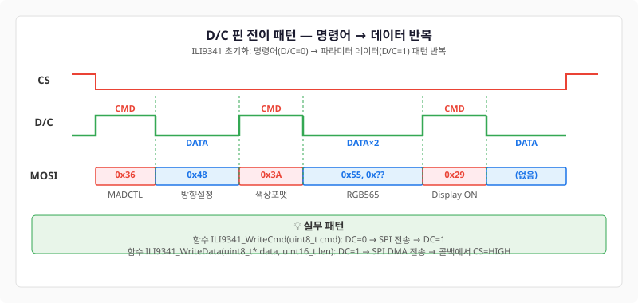
LCD가 초기화되면 이제 픽셀 데이터를 보낼 수 있습니다. 하지만 그 전에 색상 포맷을 이해해야 합니다. ILI9341은 RGB565 형식을 사용합니다.
RGB565는 16비트 색상 포맷입니다. 빨강(R) 5비트, 초록(G) 6비트, 파랑(B) 5비트를 합쳐서 65,536가지 색상을 표현합니다.
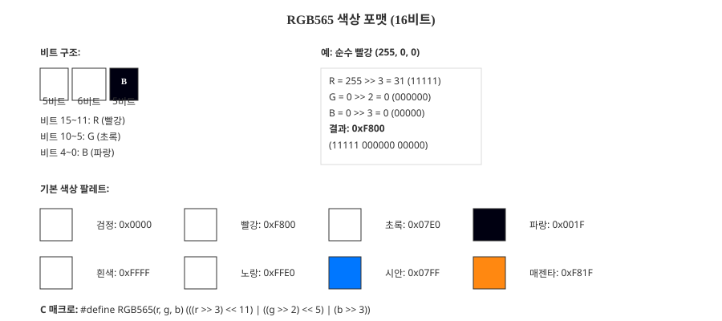
16비트 값의 구조:
Bit 15~11: RRRRR (빨강, 5비트)
Bit 10~5: GGGGGG (초록, 6비트)
Bit 4~0: BBBBB (파랑, 5비트)
예를 들어 순수 빨강 (255, 0, 0)을 RGB565로 변환하려면:
/* 순수 빨강 계산 */
uint8_t r = 255 >> 3; // 5비트로 정규화: 31
uint8_t g = 0 >> 2; // 6비트로 정규화: 0
uint8_t b = 0 >> 3; // 5비트로 정규화: 0
uint16_t color = (r << 11) | (g << 5) | b;
// = (31 << 11) | (0 << 5) | 0
// = 0xF800
/* 또는 다이렉트 계산 */
#define RGB565(r, g, b) (((r >> 3) << 11) | ((g >> 2) << 5) | (b >> 3))
uint16_t red = RGB565(255, 0, 0); // = 0xF800
기본 색상 팔레트:
| 색상 | RGB | RGB565 |
|---|---|---|
| 빨강 | (255, 0, 0) | 0xF800 |
| 초록 | (0, 255, 0) | 0x07E0 |
| 파랑 | (0, 0, 255) | 0x001F |
| 흰색 | (255, 255, 255) | 0xFFFF |
| 검정색 | (0, 0, 0) | 0x0000 |
LCD에 픽셀 데이터를 쓰려면:
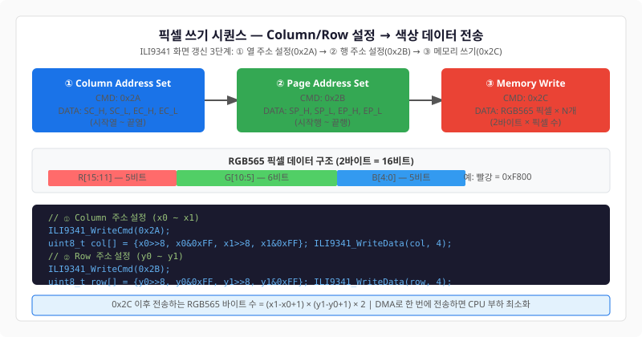
/* ch12_ex03_ili9341_pixel_write.c — 픽셀 및 색상 쓰기 */
#include "main.h"
#define LCD_WIDTH 320
#define LCD_HEIGHT 240
/* 전체 화면 채우기 */
void ILI9341_Fill_Color(uint16_t color)
{
uint8_t cmd, data[4];
/* Column 주소 설정 (0 ~ 319) */
cmd = 0x2A;
HAL_GPIO_WritePin(GPIOA, GPIO_PIN_4, GPIO_PIN_RESET); // D/C = 0
HAL_SPI_Transmit(&hspi1, &cmd, 1, 100);
data[0] = 0x00; data[1] = 0x00; // 시작 X = 0
data[2] = 0x01; data[3] = 0x3F; // 끝 X = 319
HAL_GPIO_WritePin(GPIOA, GPIO_PIN_4, GPIO_PIN_SET); // D/C = 1
HAL_SPI_Transmit(&hspi1, data, 4, 100);
/* Row 주소 설정 (0 ~ 239) */
cmd = 0x2B;
HAL_GPIO_WritePin(GPIOA, GPIO_PIN_4, GPIO_PIN_RESET); // D/C = 0
HAL_SPI_Transmit(&hspi1, &cmd, 1, 100);
data[0] = 0x00; data[1] = 0x00; // 시작 Y = 0
data[2] = 0x00; data[3] = 0xEF; // 끝 Y = 239
HAL_GPIO_WritePin(GPIOA, GPIO_PIN_4, GPIO_PIN_SET); // D/C = 1
HAL_SPI_Transmit(&hspi1, data, 4, 100);
/* 색상 데이터 전송 (320 × 240 × 2 = 153,600 바이트) */
cmd = 0x2C;
HAL_GPIO_WritePin(GPIOA, GPIO_PIN_4, GPIO_PIN_RESET); // D/C = 0
HAL_SPI_Transmit(&hspi1, &cmd, 1, 100);
/* 대용량 데이터는 버퍼로 나누어 전송 */
static uint16_t color_buffer[1000];
for (int i = 0; i < 1000; i++) {
color_buffer[i] = color;
}
HAL_GPIO_WritePin(GPIOA, GPIO_PIN_4, GPIO_PIN_SET); // D/C = 1
for (int i = 0; i < 154; i++) { // 154 × 1000 = 154,000 > 153,600
HAL_SPI_Transmit(&hspi1, (uint8_t *)color_buffer, 2000, 1000);
}
}
/* 개별 픽셀 그리기 */
void ILI9341_Draw_Pixel(uint16_t x, uint16_t y, uint16_t color)
{
uint8_t cmd, data[4];
/* Column 주소 설정 */
cmd = 0x2A;
HAL_GPIO_WritePin(GPIOA, GPIO_PIN_4, GPIO_PIN_RESET);
HAL_SPI_Transmit(&hspi1, &cmd, 1, 100);
data[0] = (x >> 8) & 0xFF;
data[1] = x & 0xFF;
data[2] = (x >> 8) & 0xFF;
data[3] = x & 0xFF;
HAL_GPIO_WritePin(GPIOA, GPIO_PIN_4, GPIO_PIN_SET);
HAL_SPI_Transmit(&hspi1, data, 4, 100);
/* Row 주소 설정 */
cmd = 0x2B;
HAL_GPIO_WritePin(GPIOA, GPIO_PIN_4, GPIO_PIN_RESET);
HAL_SPI_Transmit(&hspi1, &cmd, 1, 100);
data[0] = (y >> 8) & 0xFF;
data[1] = y & 0xFF;
data[2] = (y >> 8) & 0xFF;
data[3] = y & 0xFF;
HAL_GPIO_WritePin(GPIOA, GPIO_PIN_4, GPIO_PIN_SET);
HAL_SPI_Transmit(&hspi1, data, 4, 100);
/* 색상 쓰기 */
cmd = 0x2C;
HAL_GPIO_WritePin(GPIOA, GPIO_PIN_4, GPIO_PIN_RESET);
HAL_SPI_Transmit(&hspi1, &cmd, 1, 100);
uint8_t color_data[2] = {(color >> 8) & 0xFF, color & 0xFF};
HAL_GPIO_WritePin(GPIOA, GPIO_PIN_4, GPIO_PIN_SET);
HAL_SPI_Transmit(&hspi1, color_data, 2, 100);
}
한 번에 한 픽셀씩 그리면 느립니다. 대신 기본 도형 함수를 만들어 직선, 사각형, 원을 빠르게 그릴 수 있습니다.
직선을 그리려면 시작점(x0, y0)에서 끝점(x1, y1)까지 "어느 픽셀을 칠할 것인가"를 결정해야 합니다. Bresenham 알고리즘은 정수 연산만으로 최적의 픽셀 순서를 찾습니다.
/* ch12_ex04_ili9341_shapes.c — 도형 그리기 */
#include "main.h"
/* Bresenham 직선 알고리즘 */
void ILI9341_Draw_Line(uint16_t x0, uint16_t y0, uint16_t x1, uint16_t y1, uint16_t color)
{
int16_t dx = (x1 > x0) ? (x1 - x0) : (x0 - x1);
int16_t dy = (y1 > y0) ? (y1 - y0) : (y0 - y1);
int16_t sx = (x0 < x1) ? 1 : -1;
int16_t sy = (y0 < y1) ? 1 : -1;
int16_t err = dx - dy;
int16_t x = x0, y = y0;
while (1) {
ILI9341_Draw_Pixel(x, y, color);
if (x == x1 && y == y1) break;
int16_t e2 = 2 * err;
if (e2 > -dy) {
err -= dy;
x += sx;
}
if (e2 < dx) {
err += dx;
y += sy;
}
}
}
/* 사각형 그리기 (외곽선) */
void ILI9341_Draw_Rectangle(uint16_t x, uint16_t y, uint16_t w, uint16_t h, uint16_t color)
{
/* 위쪽 선 */
ILI9341_Draw_Line(x, y, x + w, y, color);
/* 아래쪽 선 */
ILI9341_Draw_Line(x, y + h, x + w, y + h, color);
/* 왼쪽 선 */
ILI9341_Draw_Line(x, y, x, y + h, color);
/* 오른쪽 선 */
ILI9341_Draw_Line(x + w, y, x + w, y + h, color);
}
/* 채워진 사각형 */
void ILI9341_Draw_Filled_Rectangle(uint16_t x, uint16_t y, uint16_t w, uint16_t h, uint16_t color)
{
for (uint16_t row = y; row < y + h; row++) {
ILI9341_Draw_Line(x, row, x + w, row, color);
}
}
/* 원 그리기 (Midpoint Circle Algorithm) */
void ILI9341_Draw_Circle(uint16_t cx, uint16_t cy, uint16_t r, uint16_t color)
{
int16_t x = 0, y = r;
int16_t d = 3 - 2 * r;
while (x <= y) {
ILI9341_Draw_Pixel(cx + x, cy + y, color);
ILI9341_Draw_Pixel(cx - x, cy + y, color);
ILI9341_Draw_Pixel(cx + x, cy - y, color);
ILI9341_Draw_Pixel(cx - x, cy - y, color);
ILI9341_Draw_Pixel(cx + y, cy + x, color);
ILI9341_Draw_Pixel(cx - y, cy + x, color);
ILI9341_Draw_Pixel(cx + y, cy - x, color);
ILI9341_Draw_Pixel(cx - y, cy - x, color);
if (d < 0) {
d = d + 4 * x + 6;
} else {
d = d + 4 * (x - y) + 10;
y--;
}
x++;
}
}
숫자와 텍스트를 화면에 표시해야 합니다. 우리는 비트맵 폰트를 사용합니다. 이는 미리 렌더링된 문자 픽셀 맵입니다.
가장 간단한 폰트는 5×7 비트맵입니다. 각 글자는 5픽셀 너비 × 7픽셀 높이의 배열로 정의됩니다.
/* ch12_ex05_ili9341_text.c — 비트맵 폰트 및 텍스트 출력 */
#include "main.h"
/* 5×7 ASCII 폰트 (일부 예시, 전체는 32~126 ASCII) */
static const uint8_t font5x7[][7] = {
/* '0' (ASCII 48) */
{0x1C, 0x22, 0x22, 0x22, 0x22, 0x22, 0x1C},
/* '1' */
{0x08, 0x0C, 0x08, 0x08, 0x08, 0x08, 0x1C},
/* 더 많은 글자... */
};
/* 폰트 데이터로부터 개별 픽셀 추출 */
void ILI9341_Draw_Char(uint16_t x, uint16_t y, char ch, uint16_t color, uint16_t bg_color)
{
if (ch < 32 || ch > 127) return; // ASCII 범위 확인
const uint8_t *font_data = font5x7[ch - 32];
for (uint8_t row = 0; row < 7; row++) {
uint8_t byte = font_data[row];
for (uint8_t col = 0; col < 5; col++) {
uint16_t px = x + col;
uint16_t py = y + row;
/* 비트를 확인하고 픽셀 그리기 */
if (byte & (0x80 >> col)) {
ILI9341_Draw_Pixel(px, py, color);
} else {
ILI9341_Draw_Pixel(px, py, bg_color);
}
}
}
}
/* 문자열 출력 */
void ILI9341_Draw_String(uint16_t x, uint16_t y, const char *str, uint16_t color, uint16_t bg_color)
{
uint16_t px = x;
while (*str) {
if (*str == '\n') {
y += 8; // 다음 줄
px = x;
} else if (*str == '\r') {
px = x;
} else {
ILI9341_Draw_Char(px, y, *str, color, bg_color);
px += 6; // 문자 너비 (5 + 1 간격)
}
str++;
}
}
/* 정수를 문자열로 변환해 출력 */
void ILI9341_Draw_Int(uint16_t x, uint16_t y, int32_t value, uint16_t color)
{
char buffer[16];
snprintf(buffer, sizeof(buffer), "%d", value);
ILI9341_Draw_String(x, y, buffer, color, 0x0000);
}
지금까지 우리는 개별 함수들을 만들었습니다. 이제 이들을 Driver 레이어로 통합하여, App 레이어가 간단한 인터페이스만으로 LCD를 제어할 수 있게 합니다.
Ch11에서 I2C Driver를 만든 것처럼, 이제 SPI Driver를 만듭니다:
양쪽 모두 2-레이어 Driver 패턴을 사용합니다:
/* spi_driver.h */
#ifndef SPI_DRIVER_H
#define SPI_DRIVER_H
#include "main.h"
/**
* @brief SPI1 초기화
*/
void SPI_Init(void);
/**
* @brief SPI DMA 전송
* @param data: 송신 버퍼
* @param len: 바이트 수
*/
HAL_StatusTypeDef SPI_Transmit_DMA(uint8_t *data, uint16_t len);
/**
* @brief DMA 전송 완료 대기
*/
void SPI_Wait_Complete(void);
#endif
/* spi_driver.c */
#include "spi_driver.h"
#include "log_system.h"
extern SPI_HandleTypeDef hspi1;
void SPI_Init(void)
{
LOG_I("SPI1 드라이버 초기화");
/* CubeMX 자동 생성 코드에서 호출됨 */
}
HAL_StatusTypeDef SPI_Transmit_DMA(uint8_t *data, uint16_t len)
{
LOG_D("SPI DMA TX: %d bytes", len);
return HAL_SPI_Transmit_DMA(&hspi1, data, len);
}
void SPI_Wait_Complete(void)
{
while (hspi1.State != HAL_SPI_STATE_READY) __NOP();
}
/* ili9341_driver.h */
#ifndef ILI9341_DRIVER_H
#define ILI9341_DRIVER_H
#include "main.h"
/* LCD 해상도 */
#define LCD_WIDTH 320
#define LCD_HEIGHT 240
/* RGB565 색상 매크로 */
#define RGB565(r, g, b) (((r >> 3) << 11) | ((g >> 2) << 5) | (b >> 3))
#define COLOR_BLACK 0x0000
#define COLOR_RED 0xF800
#define COLOR_GREEN 0x07E0
#define COLOR_BLUE 0x001F
#define COLOR_WHITE 0xFFFF
/**
* @brief LCD 초기화 (Reset + 명령어 시퀀스)
*/
void ILI9341_Init(void);
/**
* @brief 전체 화면 채우기
*/
void ILI9341_Fill_Color(uint16_t color);
/**
* @brief 픽셀 그리기
*/
void ILI9341_Draw_Pixel(uint16_t x, uint16_t y, uint16_t color);
/**
* @brief 직선 그리기
*/
void ILI9341_Draw_Line(uint16_t x0, uint16_t y0, uint16_t x1, uint16_t y1, uint16_t color);
/**
* @brief 사각형 그리기
*/
void ILI9341_Draw_Rectangle(uint16_t x, uint16_t y, uint16_t w, uint16_t h, uint16_t color);
/**
* @brief 문자 그리기
*/
void ILI9341_Draw_Char(uint16_t x, uint16_t y, char ch, uint16_t color, uint16_t bg_color);
/**
* @brief 문자열 그리기
*/
void ILI9341_Draw_String(uint16_t x, uint16_t y, const char *str, uint16_t color, uint16_t bg_color);
#endif
/* ili9341_driver.c — 이전 섹션의 모든 함수 구현 */
v1.2 아키텍처가 완성되었습니다:
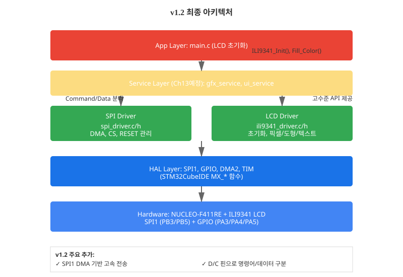
초기화 후 화면이 켜지지 않으면 다음을 확인하세요:
| # | 항목 | 확인 방법 |
|---|---|---|
| 1 | 전원 | VCC = 3.3V, GND 연결 확인 |
| 2 | Reset 신호 | 로그에서 "Reset LOW → HIGH" 확인 |
| 3 | 명령어 순서 | 데이터시트의 초기화 코드 정확히 복사했는지 확인 |
| 4 | D/C 신호 | 로직 애널라이저로 D/C 신호 변이 확인 |
| 5 | SPI 클럭 | CubeMX에서 PSC 값 확인 (최대 42MHz) |
| 6 | DMA 완료 | 로그에서 "DMA 완료" 메시지 출력 여부 |
| 7 | 색상 설정 | 0x2C(Write Memory) 후 색상 데이터 전송 확인 |
| 8 | CS 타이밍 | 각 전송 전 CS=0, 후 CS=1 확인 |
현재 v1.2에서는 개별 픽셀, 도형, 텍스트를 직접 그렸습니다. 다음 Ch13에서는 이들을 GFX Service 레이어로 감싸서:
이를 통해 v1.3 (스마트 시계 시각 화면 완성)에 도달합니다.
이 챕터 완료 후 전체 아키텍처에 SPI Driver와 LCD Driver가 추가되었습니다.